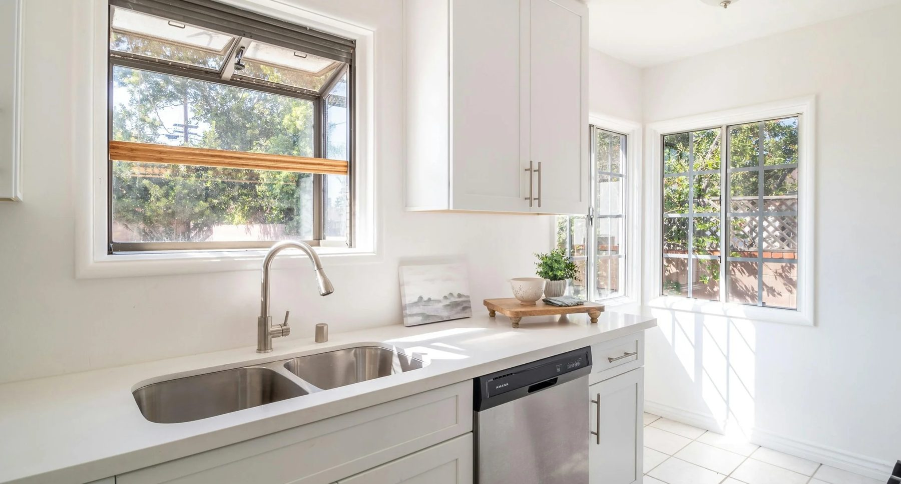
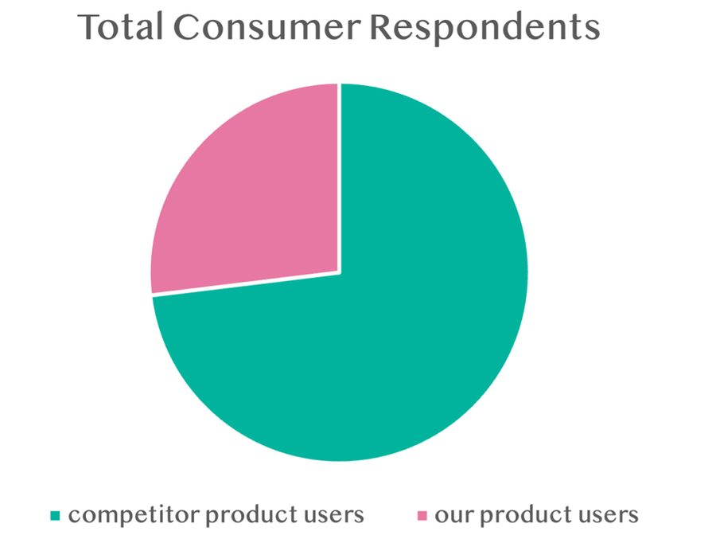
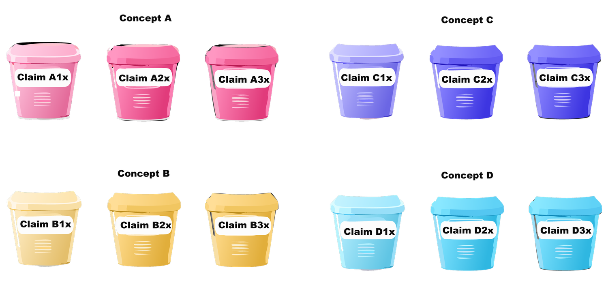
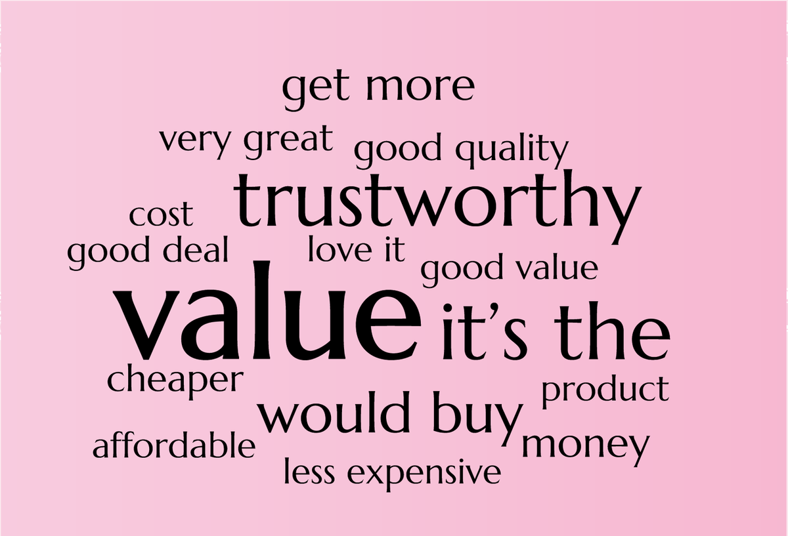
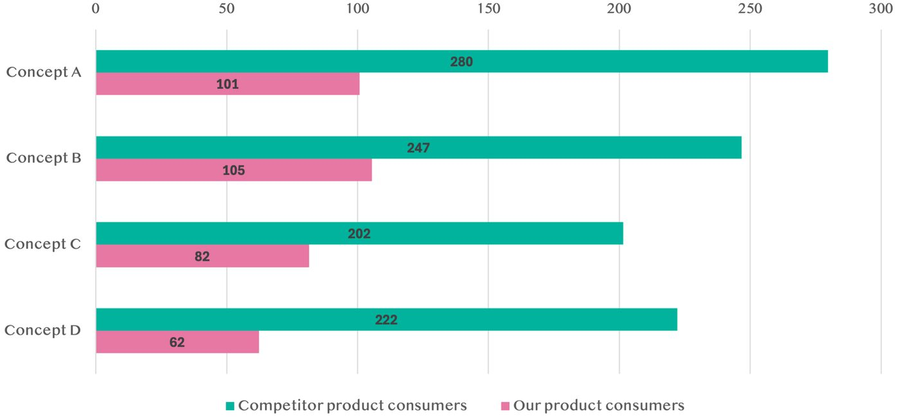
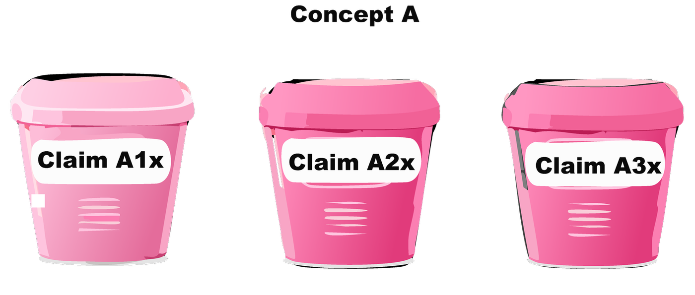

Determining the most user-centric claim for value packs
// consumer insights data analyst //
Determining which best value claim connects the most with current and competitor users of generic dishwasher detergent products

Challenge: Stakeholders of a generic dishwasher detergent brand want to motivate consumers to purchase new large-size packages of an existing product, however, consumers are unsure if the product is a good value for their money.
Solution: Determine which of the value size banners on the new product design align best with current and competitor consumer needs.
Which claim encourages consumer trust in the new value-pack product?
Determining which users we should talk to
recruit participants
We successfully recruited 2,100 consumers to review the four value-pack banner designs.
These consumers completed a custom survey, where they compared the images of four new product designs with varying value-pack claims, then rated the product images on believability, best value for money, and purchase interest.
We teamed up with Toluna and designed screeners to identify current and competitor dishwasher detergent users. Then, we created custom surveys in Toluna Start to quantitatively determine which claim on the new value packs was most trustworthy to consumers of current and competitor products.


survey analysis
Using AI-driven natural language processing (NLP) models, we generated key themes, consumer sentiment, word frequencies, and emergent trends

Which value-pack claim do current and competitor product users find the most compelling?
“Concept A is the best value, because I can wash more and it costs less than other products.”

insights
Concept A scored the highest for
- best value,
- trustworthy claims,
- and purchase interest
Concept A was significantly preferred by competitor product users, considered to be
- better value,
- and believable

outcomes
Recommended that stakeholders proceed with Concept A, as it meets consumer needs and has the potential to generate growth with current and competitor product users.
wrapping up
This research project showed us that Concept A resonates deeper with consumers, as the claim on this value pack was framed as “X quantity more.”
Our product consumers are pragmatic and need product claims to have clear messaging with quantifiable metrics on what “more” translates to when deciding to purchase a product.
When our revised claims communicate to users “how much more” they are getting for “their money”, then they feel more comfortable purchasing a value pack, which leads to Concept A meeting consumer needs versus existing competitor products.
*Note: Product names have been changed as this is under NDA